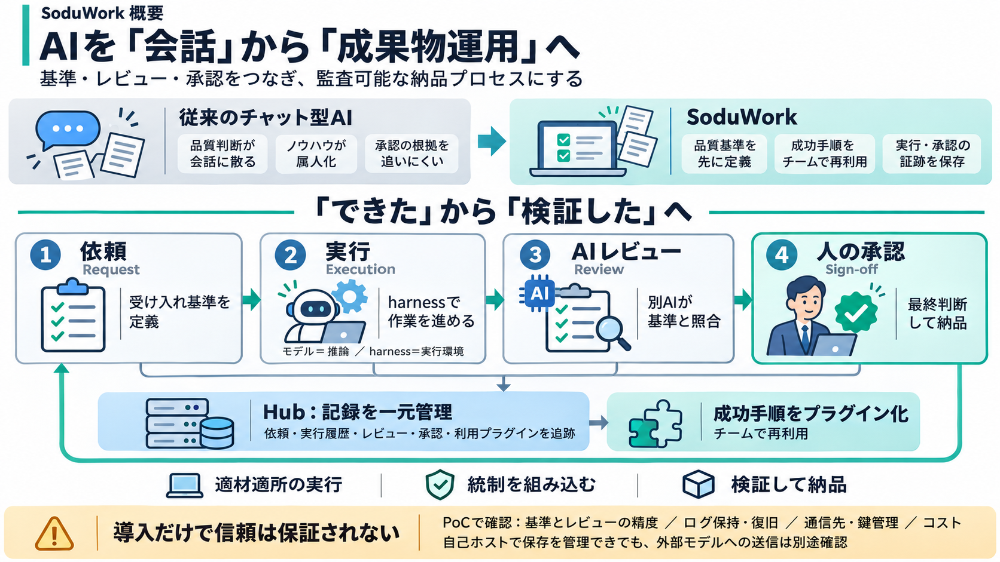

GitHub - mdiri-ai/SoduWork: The AI-native engine for teams and their agents. Multi-harness, multi-agent, self-hosted. · GitHub
SoduWork doesn't replace agent harnesses — it runs them inside a team workspace and adds the layer they don't have: one …

SoduWorkは、AIの出力を「信頼できる納品プロセス（request→execution→review→sign-off）」として管理し、成功手順をプラグイン化して再利用するためのチーム向けエンジンです。
従来のチャット型AIは速い一方で、信頼（再現性）と運用（引き継ぎ・統制）が追いつきにくく、上手くいったノウハウが個人の履歴に埋もれがちです。
速いが品質担保が難しい（判断基準が会話内に散る）。
ツール増で手順が統一されず、背景説明が毎回発生。
成功パターンがスレッド内で消え、チーム資産化しにくい。
誰が何を根拠に承認したかを追えない。
SoduWorkはAIを“会話の相手”から外し、acceptance criteria（受け入れ基準）→AIレビュー→人の承認へと工程として固定します。
依頼＝仕様（acceptance criteria）を明確化。
別AIが基準チェック（レビューAI）。
人が最終承認し、成果物として扱う。
Hub（共有の課題プール）を中心に、requestからexecution、レビュー、承認、採用したプラグインまでの“証跡”を残し、監査可能にします。
SoduWorkではharnessはモデルではなく、モデルを使ってタスクを進める実行環境（手順・子エージェント起動など）の役割を担います。
テキスト生成などの“考える”部分。
手順化された“進め方”を回す部分。
途中でharnessを切り替えても履歴や作業フォルダを維持したい。
OpenCode / Qwen Code / DeepSeek Harness / Codex Harness等へ対応。
基本フローは、依頼（仕様）を起点に実行し、AIレビューで基準を確認し、人が承認して完了とします。
acceptance criteriaを付与。
harness＋（必要に応じて）multi-agentで実装。
レビューAIが基準照合。
人が最終承認（doneの定義）。
成功した手順をプラグイン化。
記録を残し監査可能に。
Verified deliveryは、acceptance criteria→別AIレビュー→人の承認という流れで“できた”を“検証した”へ寄せる設計です。
requestにacceptance criteriaを先付け。
レビューAIが各基準をチェック。
最後に人がsign-off。
強さは基準妥当性とレビューAI能力に依存。
SoduWorkはマルチエージェント“だけ”ではなく、ガバナンス・再利用・監査までを設計に含める点が、従来のチャット運用との差です。
会話の文脈に品質管理が依存しやすい。
acceptance criteriaとレビューで工程化。
個人スレッドに埋もれがち。
成功手順をプラグインとしてチーム再利用。
ツールが増えるほど手順が散らばる。
権限・レビュー・監査ログを内蔵。
SoduWorkはSmart dispatch（適材適所）、Built-in governance（組織統治）、Verified delivery（検証済み納品）を柱にします。
タスクに応じて実行（モデル/エージェント）を最適化。
誰が何をどこで使うか、レビュー・権限・監査。
基準に基づく検証＋人の承認。
自己ホストならHub周りの保存と保持を自分でコントロールできますが、モデル提供先やコネクタに送るデータ可視性は別問題として確認が必要です。
issues/plugins/チャット履歴を自分のHubへ保存。
プロンプトやファイルがモデル提供先から見える可能性。
機密区分・通信先・ログ方針を要件化。
セキュリティ/コンプライアンスは設定と実装で左右。
READM Eは全体像は強い一方で、レビューAIの品質指標・監査ログの粒度/保持・失敗時の振る舞いなどの“詰め”は読み取りづらいのでPoCで確かめるのが安全です。
acceptance criteria誤設定や誤判定の影響を実測。
監査ログの保持期間・検索性・リカバリ手順を確認。
データ分類、通信先ホワイトリスト、鍵管理の実装詳細。
Hub負荷・モデルコストの最適化をワークロードで検証。
本デッキは提示されたREADMEベースの要約内容に、Webおよび過去履歴の補足整理を反映しています。
mdiri-ai / SoduWork（README内容の要約・前提整理）
repowise.dev（Hubが単一の真実の源として説明）
explainx.ai（doneを人の承認に結び付ける点）
監査ログの保持期間など“確定的詳細”は断定できない旨
SoduWork doesn't replace agent harnesses — it runs them inside a team workspace and adds the layer they don't have: one …
SoduWork is a self-hosted hub where coding agents finish work only after someone signs off on evidence, not when the mod…
soduwork is an AI-native engine for teams and their agents, where a request is written up as an issue in a shared pool, …
1 ### fix(launcher): use safe defaults for invalid XDG\_DATA\_HOME #192·lgbisha opened Nov 14, 2026Contributor·4 tas…
この技術爆発の触媒となったのは、オープンソース・アーキテクチャの統一である。「OpenClaw」と呼ばれるオープンソース・プロジェクトは、GitHubでわずか3週間に25万のスターを獲得し、人類史上最もダウンロード数の伸びが速いソフトウェア…